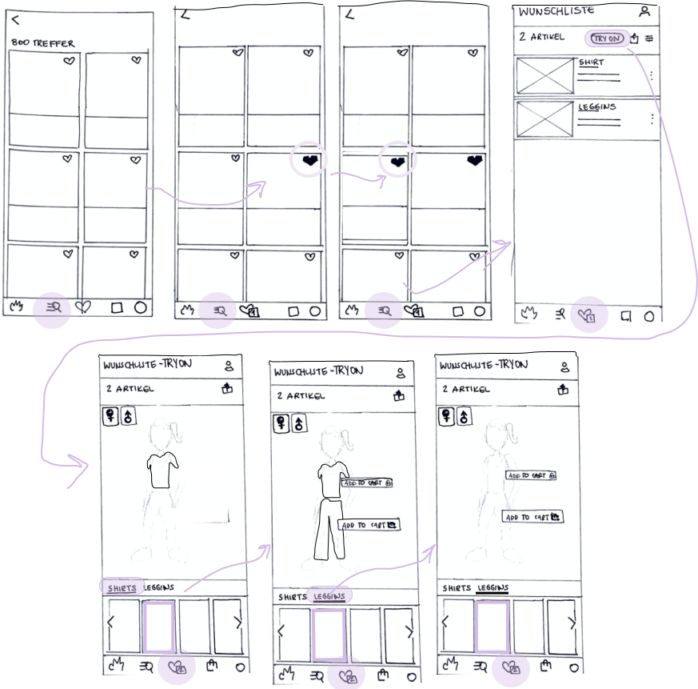

Adidas, the brand with the 3 stripes, originally from Germany but famous around the world generated 19.8 billion euros in net sales worldwide in 2020. Known mainly by its sneakers, the brand sells all kind of sports products including sports clothing; which are also to be found in the online store & iOS and Android mobile applications. Among great quality products, the adidas app assures its users acces to curated drops and exclusive content.
CHALLENGE
Analyze an already existing app and incorporate a new feature into it. The feature to be developed will be based on an area of functionality to be explored and compared to user input. The work will culminate in a high-fidelity prototype of a native app that reflects the best path forward based on research, iteration, and testing.
DURATION
- 1 Week
TEAM
- Individual Project
MY ROLE
- Survey construction
- User interviews
- Research Analysis
- Wireframing
- Prototyping
- UI Design
THE IDEA
The base idea I got randomly assigned to :
“Feature on Adidas App, where you can put together outfits of favourite selected clothes. This would help people buy items they can match with other clothes”
After reaching to the original idea owner to clarify and get some more feedback, I got the next points on what the feature should focus on :
- Build outfits, check what fits in terms of colors & styles
- Model figure should be simple, human silhouettes
- Feature should be situated as part of the wishlist
USER RESEARCH
As for this project, the focus was set on our visual design skills and no specific user research was conducted. Nevertheless, as UX Designers, we know how valuable it is to understand the problem and the user before jumping into conclusions.
Interviews
I performed a quick 3-question guerrilla interview to learn about the desirability of the feature. From it, I gathered the next insights:
- Most users prefer the convenience of buying clothes online.
- Have not used the Adidas App, but know other online shops.
- Big main point: Not seeing how clothes look on their bodies.
- On many occasions, that leads to hesitation to buy & returns.
- All of them reacted positively to the feature idea.
Users need a digital platform that gives them a close-to-real life experience and make them feel more secure at purchasing clothes.
USER FLOW
We started with our user flow. Here is the section of the flow where our features were implemented:
LO-FI SKETCHES
Having the structure of the feature clearer, we began sketching:
MID-FI
We then passed to construct our first digital prototype:
Feedback
- Low hierarchy: feature should be inside of wishlist
- More realistic human figure, not only vectors.
- Uploading/ taking real pictures takes time & effort.
- Customization should be available: body type, height
- Feature name suggestions, testers chose “CREATE OUTFIT”
Important points asked during testing:
How should the model figure look?
How customizable should the figure be?
How & where should the feature button be displayed?

Feature Implementation
In contrast with the last iteration, here is what the feature included :
Short text box section with feature button that can be closed to gain the complete view of the screen. Plus the feature button on top bar.
Better use of the screen space for the personalization options & model figure thanks to acordeon (bottom to top) section.
Option to add single items or complete outfits to cart.
From the final iteration, I managed to do three usability tests at the end and was able to receive some mainly positive feedback. All three users were able to complete the task easily.
But there's a lot to improve on :
NEXT STEPS
Considerate how complicated and expensive it would be for Adidas to create such a feature.
Further usability tests and iterations of our current design.
Interview more users who do sports regulary to try to discover what is it that they value while shopping for sports-wear.
I learned a a lot about the amount of detail is needed, even for such a simple and short feature. Early sketching, user testing & fast prototyping were key in order to deliver in the given deadline.